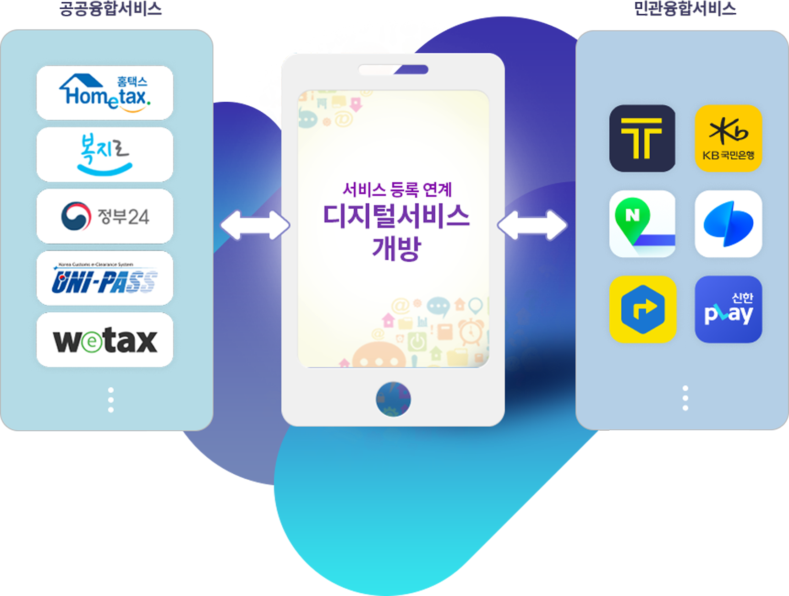
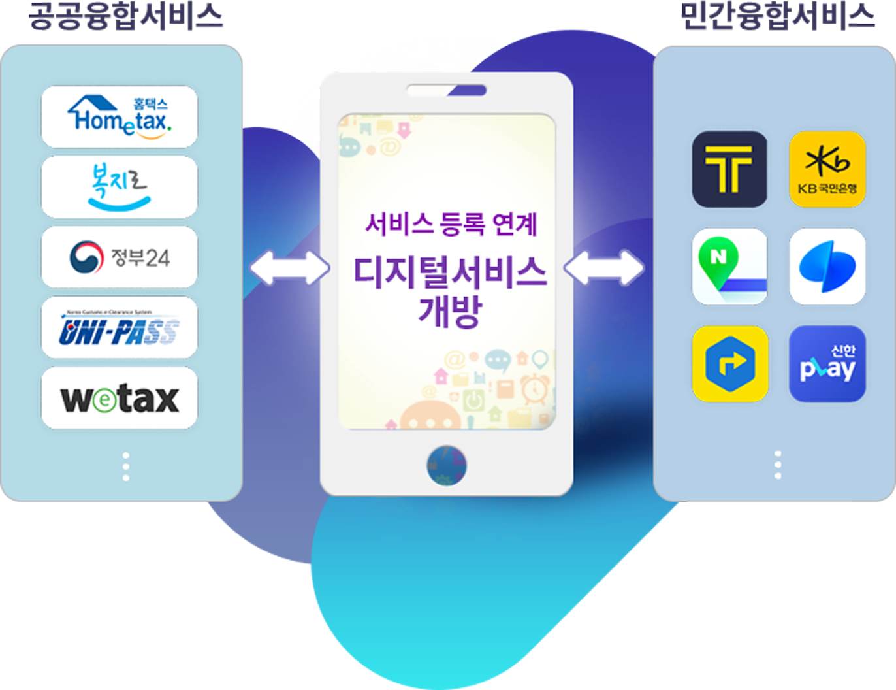

디지털서비스 개방소개
디지털서비스 개방이란?
공공서비스를 민간에 개방·연계하여 민간의 혁신역량을 활용함으로써 민·관협력 기반의 다양한 융합서비스를 창출하며, 중계허브 기능을 담당하는 디지털서비스플랫폼을 구축(행안부)하고, 개방 서비스별 API를 개발(공공기관)하여 민간과 연계합니다.
국민은 필요한 서비스를 평소 친숙한 민간앱·웹(한 곳)에서 한번에 해결, 민간은 개방된 서비스를 활용하여 새로운 융합서비스 창출 국민에게 신청·이용채널 확대로 공공서비스 접근성 및 편의성을 향상합니다.
디지털플랫폼정부 민관융합 원사이트토털서비스 구현
 국민들은,
분산되어 제공되는 정부 각처의 개별적인 웹·앱을 모두 설치하지 않아도, 본인이 자주 이용하는 민간 앱(웹)을 통해 편리하게 공공서비스 이용이 가능하게 되어, 정부가 제공하는 공공서비스의 이용 활성화를 도모할 수 있습니다.
공공기관 디지털 서비스 개방 민간채녈 연계로 국민들은 선호하는 민간채널을 사용하여 정부가 제공하는 공공서비스 - 를 편리하게 이용할 수 있습니다.기업들은...
- 개방된 공공서비스와 자사의 고유 서비스를 결합하여 시너지 창출 및 플랫폼 활성화를 기대합니다.
- 디지털 정부 생태계와 공공시장 수요를 바탕으로 민간 플랫폼 서비스의 영역을 확대합니다.
- 또한 기업, 개발자 등이 API 서비스를 바탕으로 혁신 서비스 및 관련 일자리 창출에 기여하게 됩니다.
정부는...
- 정부 서비스에 대한 국민과 기업의 접근성 · 편의성을 강화하고 정부 서비스의 디지털 전환율을 증가시키며 한정된 자원을 효율적으로 활용하는 것을 가능하게 합니다.
- API 기반 서비스 확산에 따라 정부, 민간 간 연계 뿐만 아니라, 향후 공공분야 정보시스템 간 데이터·서비스 연계 활성화가 가능합니다.
- 정부 웹·앱의 이용자 수 확대를 위한 부가적인 업무보다 실질적으로 국민 체감 성과가 높은 서비스를 개발·구축하는데 역량을 집중할 수 있습니다.